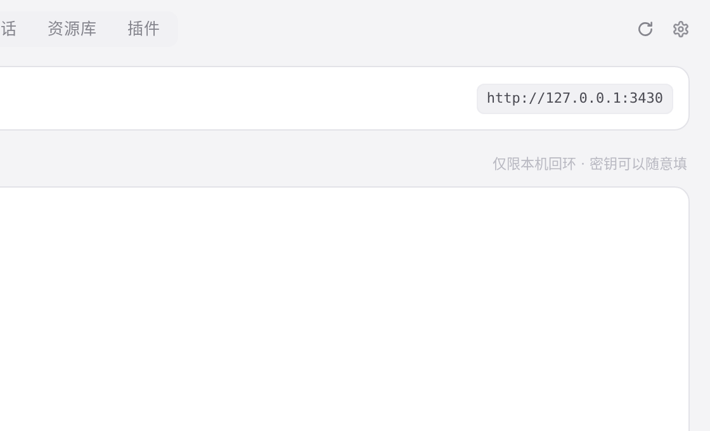
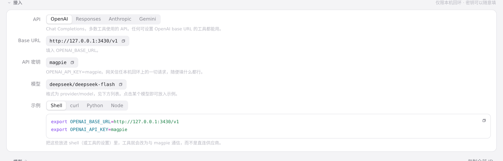

#373 界面预览
commit 9a2276d · 回到 PR · 网关页「接入」的提示语多了一种状态：网关监听在回环之外、又没开启局域网共享时，提示改成「已开放到网络 · 任何能连上的人用任意密钥都能访问」（后端新增 gateway.open 字段，i18n 补了中英文案）。命令行 serve / web / models 打印的地址也改用 MAGPIE_PUBLIC_URL。

网关接入提示 · 网关页「接入」标题旁的提示语

网关接入提示 · 接入区：当前给出的地址、密钥与示例